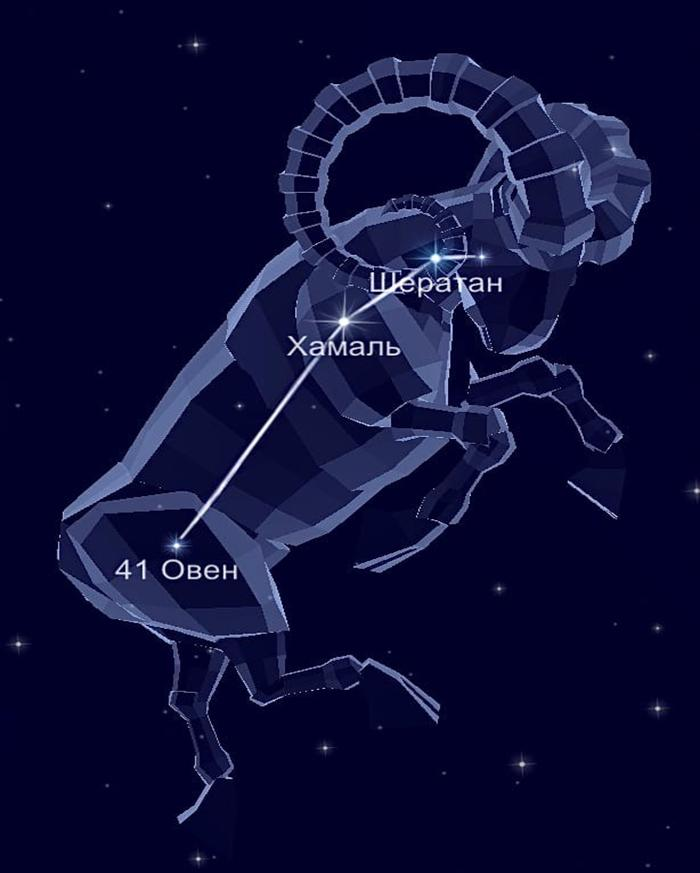

Созвездие Овен. |
|
В северном полушарии неба располагается
созвездие Овен. Поскольку
охватывает 441 квадратных градусов пространства, занимает 39 место
среди всех звёздных участков. Но граничит лишь с Китом, Тельцом,
Треугольником, Персеем и Рыбами. На самом деле, это древний звёздный
участок неба. В своё время Птолемей добавил его в свой небесный каталог Альмагест.
Миф о происхождении.Золотое руно Овна было целью путешествия Ясона и аргонавтов. Изначально Овен был подарен Меркурием Нефелии, когда ее бывший муж взял себе новую жену,; Ино стала преследовать детей Нефелии. Чтобы оградить детей, Нефелия посадила Фрикса и Геля на спину Овна и отправила их на Восток. Гель упал в Геллеспонт (пролив Дарданеллы) между Эгейским и Мраморным морями, но Фрикс доехал до Колхиды (юг Кавказа) на Черном море. Фрикс, принес Овна и его золотое руно в жертву царю Колхиды.Звёзды, образующие созвездие ОвенСамая яркая на территории, конечно же, Альфа. Она носит имя Хамаль, что в переводе означает голова барана.Второе место, по праву, занимает Бета — Шератан. Третье место принадлежит белой карликовой звезде 41 Овна. Затем следует Гамма — Мезартим, что значит первая звезда барана. А вот Дельта носит имя Ботейн (брюхо или живот).Наконец, Дзета выражена карликом белого цвета. Так как видимость приходится на широте от +90 до -59 градусов, то полностью доступно для жителей России. По данным астрономов, созвездие Овен относится к осенним. |
 |